Created by <Academia de Código_>
Internet Backbone in Europe
Invented at Xerox in the 1970s, and has become the most popular means for connecting computers in a LAN. Evolved from coaxial cable to twisted pair and fiber optics. Transmission speeds range from the original 10 Mbit/s to current 100Mbit/s, 1Gbit/s and 10Gbit/s.
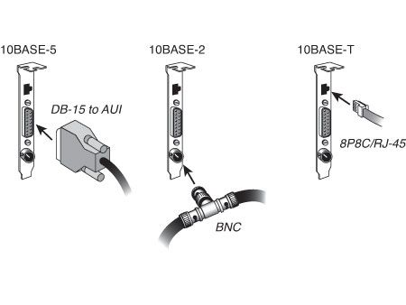Carrier Sense Multiple Access with Collision Detection
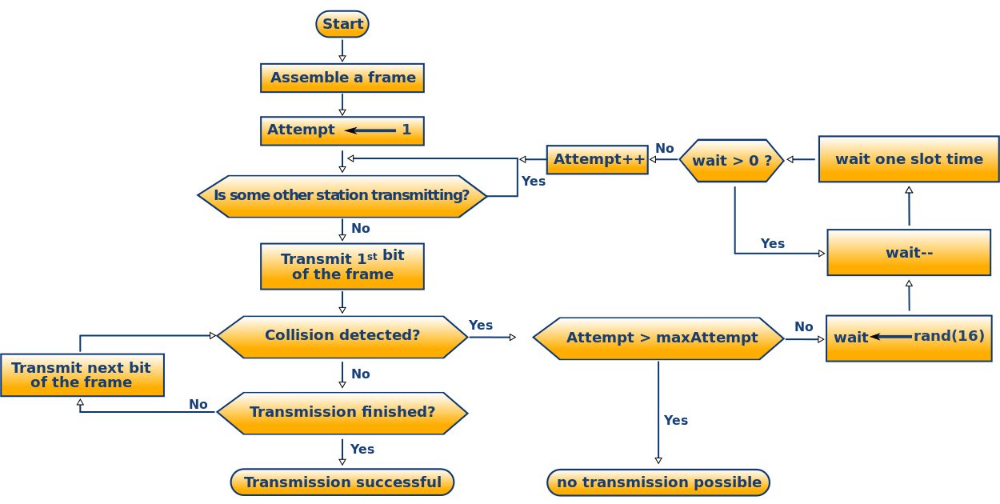A Media Access Control (MAC) address is used as a global unique identifier assigned to ethernet network interfaces for communications on the physical network segment
http://macvendors.com
We have seen how machines connect to individual networks...
But how are networks interconnected to form an internetwork?
Each host on the internet is assigned a unique 32-bit internet address that is used in all communication with that host
IP addresses encode both a network and a host on that network. They do not specify an individual computer, but a connection to a network
If a host computer moves from one network to another, its IP address must change
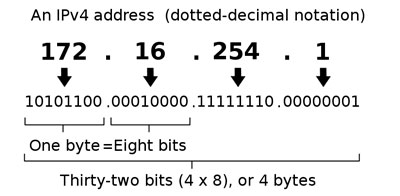The parts of the IP address that are used as the network and host addresses are not fixed, so the network and host addresses cannot be determined unless you have more information.
This information is supplied in another 32-bit number called a subnet mask.
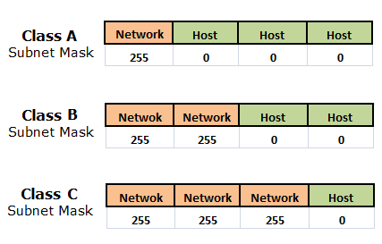The first address of a subnetwork is reserved for addressing the network itself
The last address of a subnetwork is reserved for broadcasting to all hosts on the network
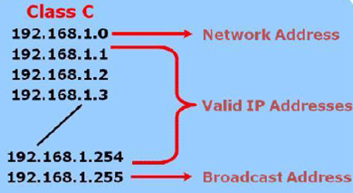All addresses starting with 127 are reserved for testing and inter-process communication on the local machine. They are called loopback addresses and should never appear on the network
When a software program uses the loopback address as a destination, the operating system returns the data back without sending traffic across any network
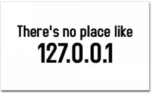Private IPv4 address ranges are reserved for private networks and can not go out to the public internet
Private addresses can be translated to one or more public addresses by using a technique called NAT and/or PAT
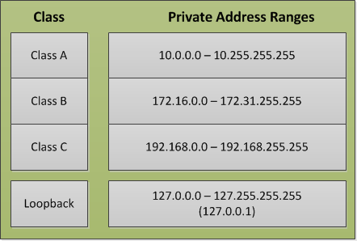ARP is a low-level protocol that hides the underlying network physical addressing, which allows an arbitrary IP address assignment to each host
Routing is the mechanism that determines the path that data follows in order to travel across multiple networks from its source to its destination. Data is routed from its source to its destination through a series of routers, and across multiple networks
Unreliable, best-effort, connectionless packet delivery system
IP datagrams may be lost, duplicated, delayed or delivered out of order
Datagrams bigger than MTU will be fragmented
IP fragments need to be reassembled at the destination
Acronym that is commonly used for the set of network protocols that compose the Internet Protocol suite
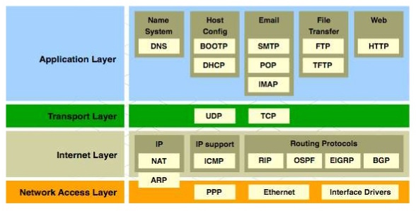Portable and system independent API for capturing network traffic
// capture all packets on interface eth0 to screen
$ tcpdump -i eth0
// display captured packets in HEX and ASCII
$ tcpdump -XX -i eth0
// capture 10 packets up to 1500 bytes each on interface eth0, save them to file, filtering by host
$ tcpdump -c 10 -i eth0 -s 1500 -w data.pcap host www.academiadecodigo.org
// read packets from a previously saved file, be very verbose about it
$ tcpdump -vvv -r data.pcap

Very similar to tcpdump, but has a graphical front-end
and integrated sorting and filtering options
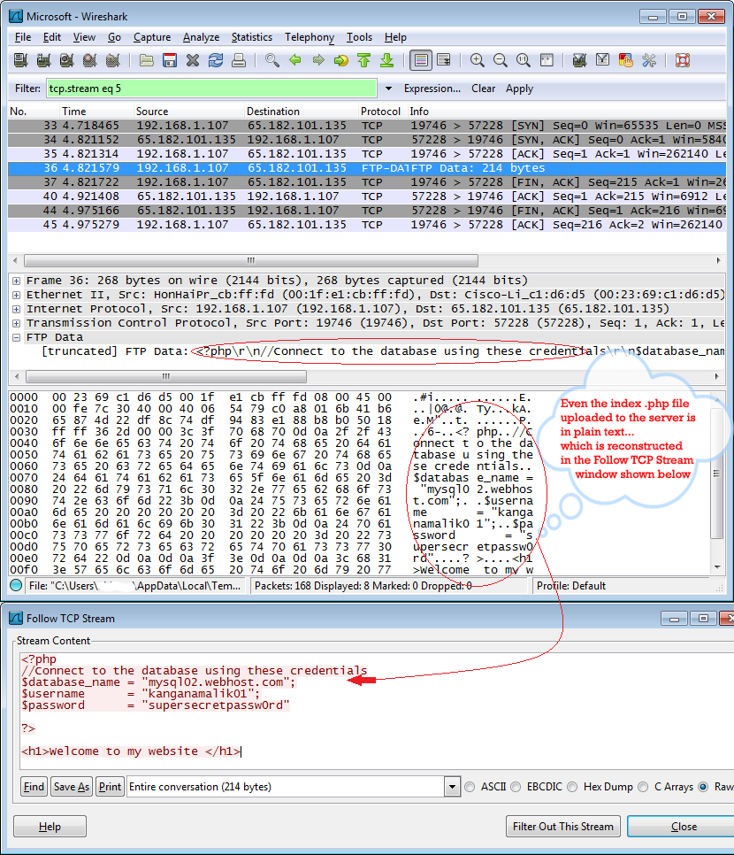With DHCP, computers request IP addresses and networking parameters automatically from a DHCP server, reducing the need for a network administrator or a user to configure these settings manually
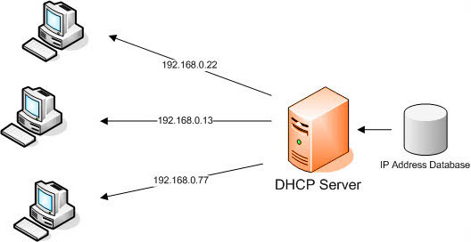ICMP is one of the main protocols of the Internet Protocol Suite. It is used by network devices to send error messages indicating, for example, that a requested service is not available or that a host or router could not be reached
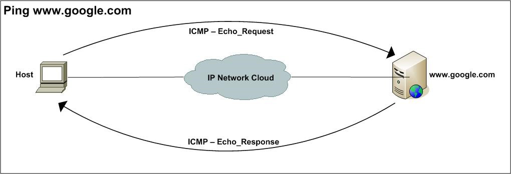Provides end-to-end communication from one application program to another
A port number is a way to identify a specific process to which an Internet or other network message is to be forwarded when it arrives at a server

Lower port numbers are reserved for standardized protocols, higher port numbers are free for use
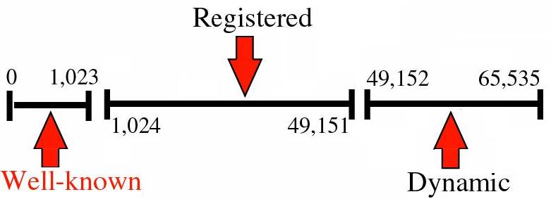
// dump all well-known ports to screen
$ cat /etc/services
// dump all http like protocol ports to screen
$ cat /etc/services | grep http
UDP provides an unreliable connectionless delivery service using IP to transport messages between machines
It uses IP to carry messages, but adds the ability to distinguish among multiple destinations within a given host computer
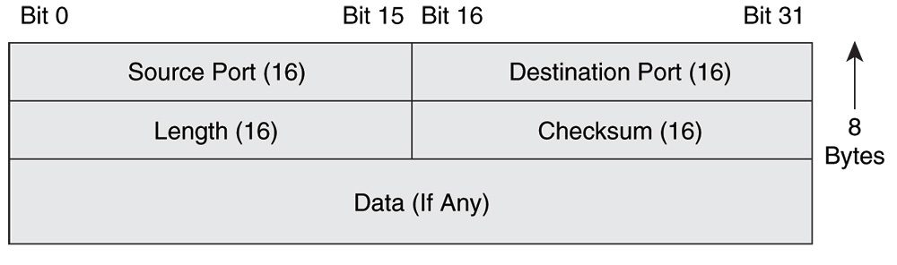TCP provides a reliable full duplex connection between two machines, allowing them to exchange large volumes of data efficiently
A TCP connection progresses through a series of states during its lifetime

Provided by the operating system, allowing application software to use network services without being concerned with low-level communication details
Sockets are characterized by:
The DNS is a hierarchical distributed naming system for computers, services, or any resource connected to the Internet or a private network. It associates various information with domain names assigned to each of the participating entities
We can query DNS for:
Architecture of a computer network in which many clients request a service from a centralized server (host computer). Servers wait for requests to arrive from clients and then respond to them.
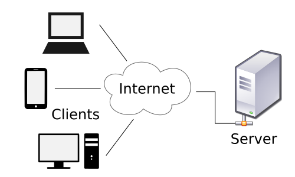Usually servers are more powerful machines located elsewhere on the network, but it is possible for the client and the server to reside on the same host
High-level representation of an IP address and used by most of the other networking classes
Capable of performing DNS resolutions, storing results in a local cache and testing for host reachability
Different processes can communicate with each other across networks by means of sockets. Java implements both TCP and UDP sockets, allowing the programmer to treat a network connection as just another stream.
java.net.DatagramSocket implements UDP sockets, capable of sending and receiving UDP datagrams to/from a specified host and port
java.net.Socket implements TCP client sockets, capable of connecting to a specified server and port
java.net.ServerSocket implements TCP server sockets, used to wait for requests to come in over the network.
// STEP1: Get your host and port
String hostName = args[0];
int portNumber = Integer.parseInt(args[1]);
// STEP2: Create send and receive buffers
byte[] sendBuffer = new byte[1024];
byte[] recvBuffer = new byte[1024];
// STEP3: Open a UDP (datagram) socket
DatagramSocket socket = new DatagramSocket(portNumber);
// STEP4.1: Create and receive UDP datagram packet from the socket
DatagramPacket receivePacket = new DatagramPacket(recvBuffer, recvBuffer.length);
socket.receive(receivePacket); // blocks while packet not received
// STEP4.2: Create and send UDP datagram packet from the socket
DatagramPacket sendPacket = new DatagramPacket(sendBuffer,
sendBuffer.length, InetAddress.getByName(hostName), portNumber);
socket.send(sendPacket);
// STEP5: Close the socket
socket.close();
Steps for reading/writing to/from client socket:
// STEP1: Get the host and the port from the command-line
String hostName = args[0];
int portNumber = Integer.parseInt(args[1]);
// STEP2: Open a client socket, blocking while connecting to the server
Socket clientSocket = new Socket(hostName, portNumber);
// STEP3: Setup input and output streams
PrintWriter out = new PrintWriter(clientSocket.getOutputStream(), true);
BufferedReader in = new BufferedReader(new InputStreamReader(clientSocket.getInputStream()));
// STEP4: Read from/write to the stream
// STEP5: Close the streams
// STEP6: Close the sockets
Steps for reading/writing to/from server socket:
// STEP1: Get parameters from command line arguments
int portNumber = Integer.parseInt(args[0]);
// STEP2: Bind to local port and block while waiting for client connections
ServerSocket serverSocket = new ServerSocket(portNumber);
Socket clientSocket = serverSocket.accept();
// STEP3: Setup input and output streams
PrintWriter out = new PrintWriter(clientSocket.getOutputStream(), true);
BufferedReader in = new BufferedReader(new InputStreamReader(clientSocket.getInputStream()));
// STEP4: Read from/write to the stream
// STEP5: Close the streams
// STEP6: Close the sockets